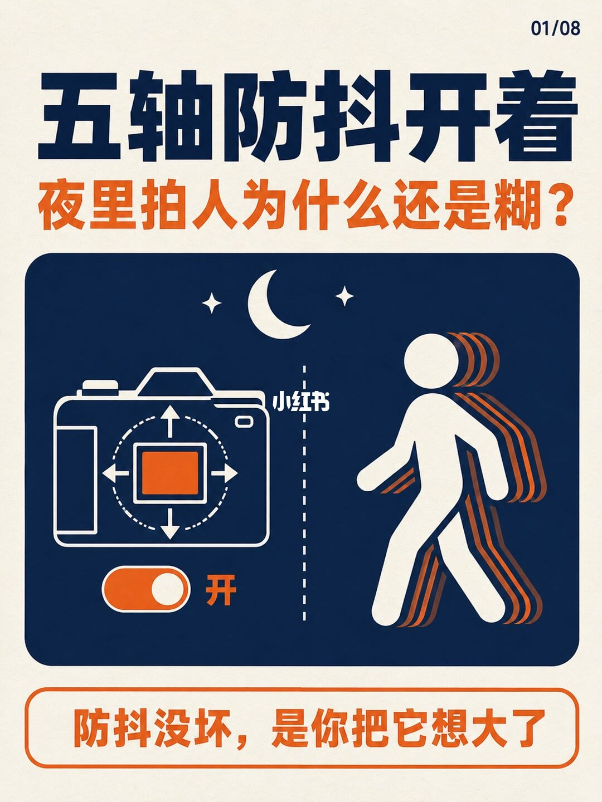
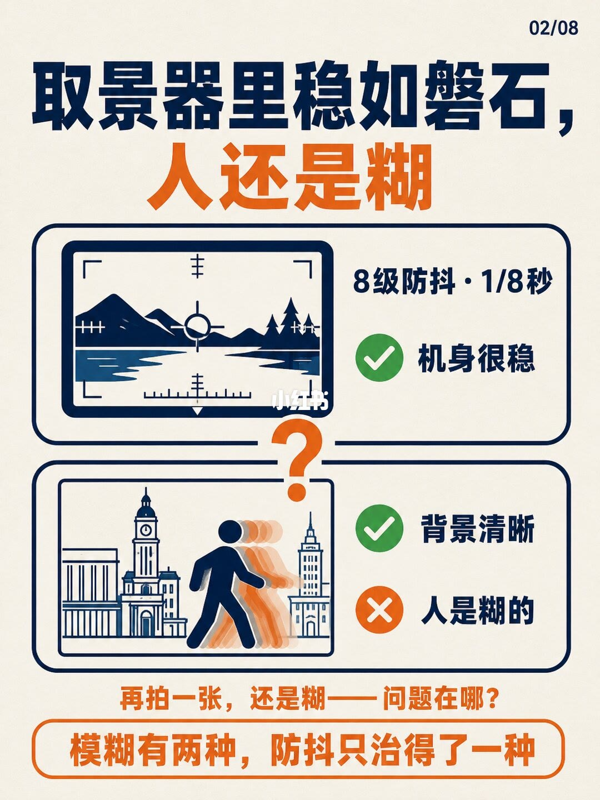
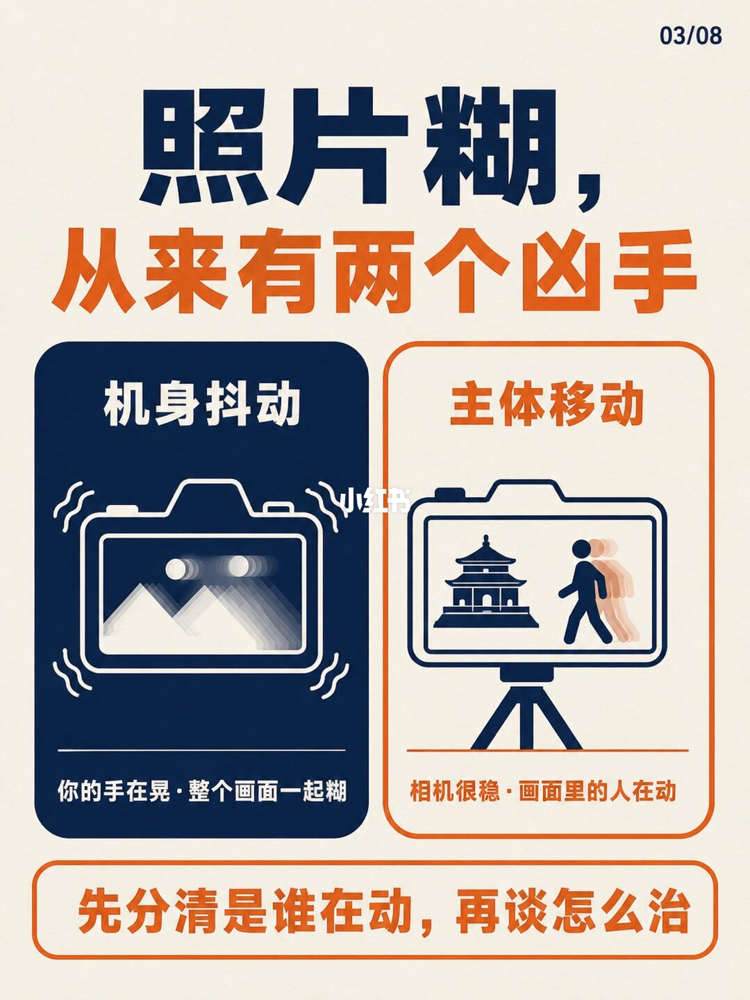
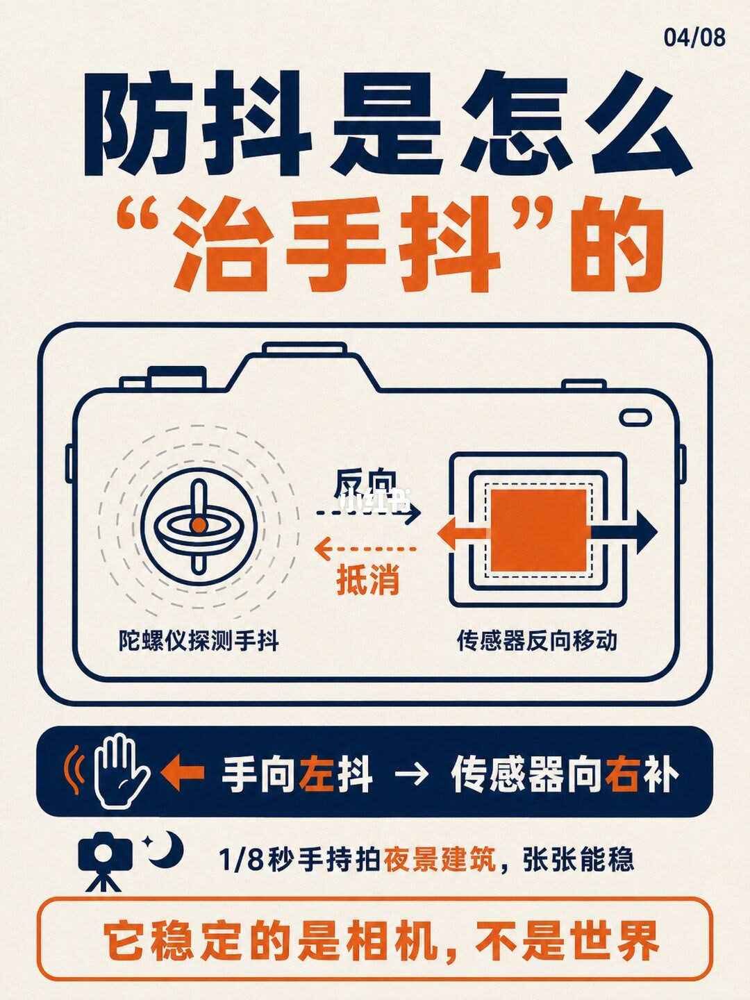
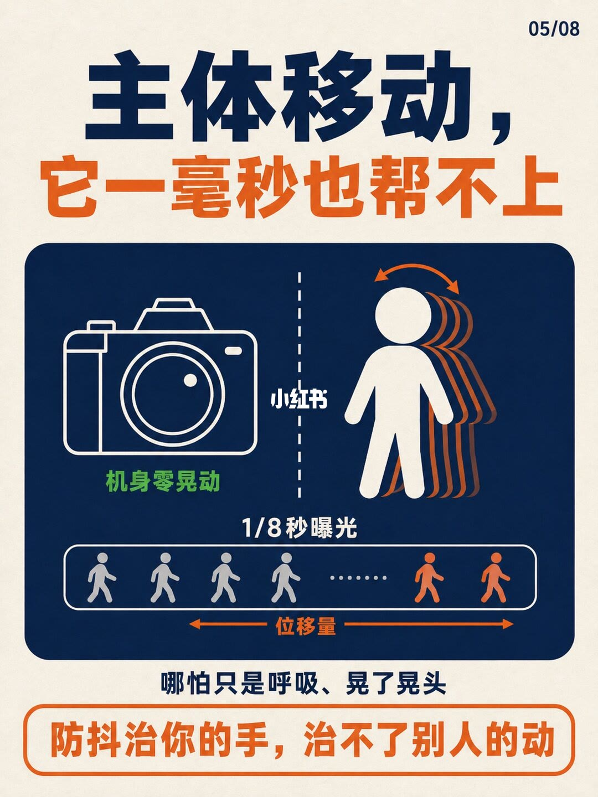
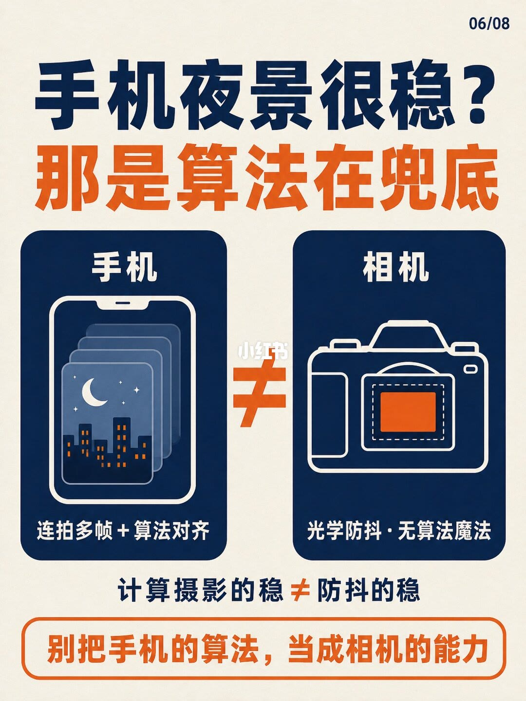
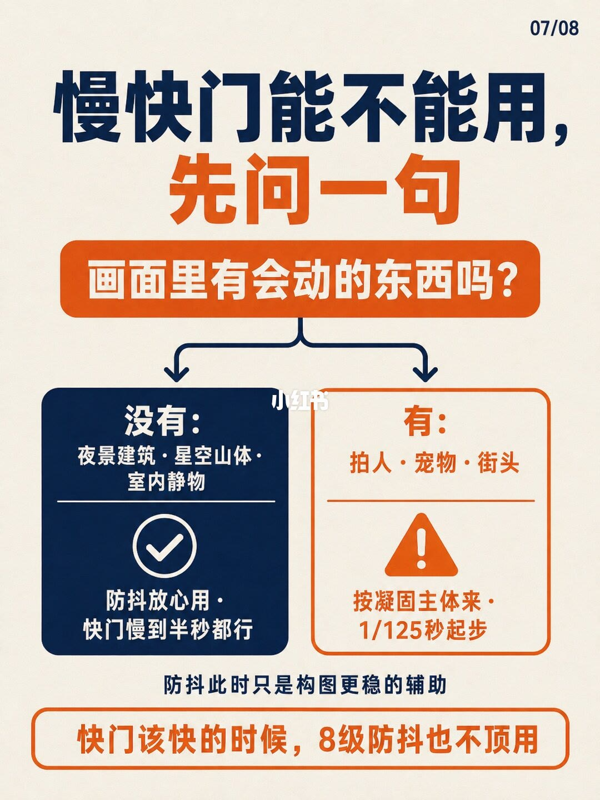
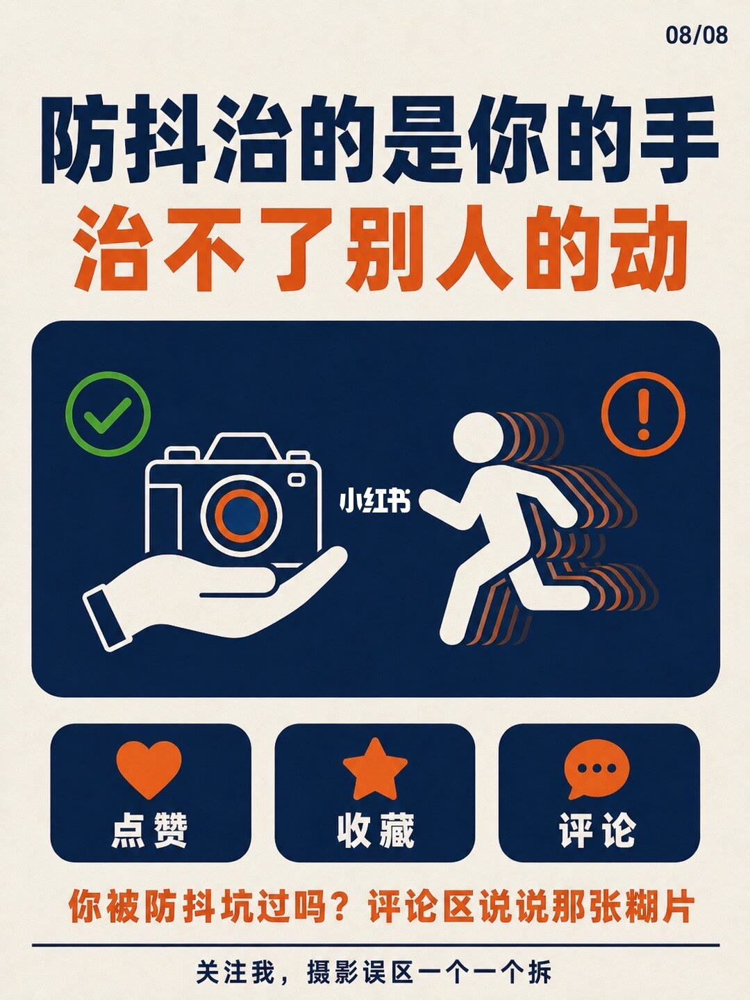

图文实录 · 小红书 · 影像派
五轴防抖开着，夜里拍人为什么还是糊？
夜里人糊，不是五轴防抖坏了。防抖只抵消你的手抖；1/8 秒里人只要呼吸、晃头或走动，位移仍会糊在画面上。慢快门先问画面里有没有会动的东西。
1/8
开关开着，走着的人仍拖出残影

封面分成左右。左边是线描相机，机身内一块传感器，周围有上下左右箭头和一圈虚线，下面拨钮停在「开」。右边是走路的人，身后拖着残影。中间一条虚线，线上有小红书标记。背景是弯月和两颗星。这一页没有印快门秒数。
页脚橙框写：防抖没坏，是你把它想大了。
2/8
取景器里稳，人还是糊

上半是取景器：山和水，中间有对焦框和水平仪。旁边写「8级防抖 · 1/8秒」，绿勾写「机身很稳」。下半是成片示意：钟楼和建筑线条清楚，前景走路的人拖着残影。绿勾写「背景清晰」，红叉写「人是糊的」。中间是一个大问号。
页脚先问「再拍一张，还是糊——问题在哪？」，橙框写「模糊有两种，防抖只治得了一种」。这里的「8级」是防抖级数，封面的「五轴」是轴数，两页都印了，不是同一个数字。
3/8
两个凶手：手在晃，或人在动

标题：照片糊，从来有两个凶手。左栏「机身抖动」：相机周围画着晃动线，屏幕里的山和两团光是重影，说明写「你的手在晃 · 整个画面一起糊」。右栏「主体移动」：相机架在三脚架上，屏幕里建筑清楚，只有人拖着残影，说明写「相机很稳 · 画面里的人在动」。两栏中间有小红书标记。
底栏：先分清是谁在动，再谈怎么治。这一页没有印快门秒数。
4/8
陀螺仪只让传感器去补手抖

标题是防抖怎么「治手抖」。图上从左到右：陀螺仪，字是「陀螺仪探测手抖」；一对箭头，分别标「反向」和「抵消」；橙色传感器，字是「传感器反向移动」。深蓝条印着「手向左抖 → 传感器向右补」。夜景相机旁印着「1/8秒手持拍夜景建筑，张张能稳」。
橙框：它稳定的是相机，不是世界。图上箭头的具体朝向和这条字有没有完全对齐，线稿较细，以印出来的这句话为准。
5/8
机身零晃动，1/8 秒里人仍在位移

标题：主体移动，它一毫秒也帮不上。深蓝框左边是静止的相机，字是「机身零晃动」；右边是头在左右晃的人，带着残影。下面一条长框标着「1/8秒曝光」，框里一排人从左往右走，底下双向箭头标「位移量」。补充句是「哪怕只是呼吸、晃了晃头」。
橙框：防抖治你的手，治不了别人的动。
6/8
手机夜景的稳，来自多帧对齐

标题：手机夜景很稳？那是算法在兜底。左边手机屏幕里叠着多帧夜景，说明是「连拍多帧 + 算法对齐」。右边相机中间是一块橙色传感器，说明是「光学防抖 · 无算法魔法」。两栏之间是不等于号。
下面一行：计算摄影的稳 ≠ 防抖的稳。橙框：别把手机的算法，当成相机的能力。这一页没有印快门秒数，也没有写手机具体合成了几帧。
7/8
先问画面里有没有会动的东西

标题：慢快门能不能用，先问一句。中间橙钮是「画面里有会动的东西吗？」左支「没有」：夜景建筑、星空山体、室内静物，勾选写「防抖放心用 · 快门慢到半秒都行」。右支「有」：拍人、宠物、街头，警告写「按凝固主体来 · 1/125秒起步」。下面一句：防抖此时只是构图更稳的辅助。
底框：快门该快的时候，8级防抖也不顶用。图上印的是「半秒」和「1/125秒」，没有再写光圈或感光度。
8/8
手能治，别人的动治不了

深蓝框左边是手持相机，上面绿勾；右边是跑动的人，身后有拖影，上面是感叹号。标题重复：防抖治的是你的手，治不了别人的动。下面三块是点赞、收藏、评论。橙字问：你被防抖坑过吗？评论区说说那张糊片。页脚：关注我，摄影误区一个一个拆。这一页没有印快门秒数。
汇总
防抖稳住的是相机
结论。夜里拍人仍糊，是因为防抖只治手抖。画面里的人在 1/8 秒里只要动，位移照样被记下来。慢快门先看有没有会动的东西：没有，图上写可以慢到半秒；有，图上写按凝固主体、从 1/125 秒起步。
支撑页。两种糊在 2/8、3/8：背景可以清楚，人单独糊。陀螺仪和传感器反向补偿在 4/8，并印着 1/8 秒手持拍夜景建筑能稳。主体位移在 5/8，同一档 1/8 秒曝光下机身可以零晃动。手机多帧算法和相机光学防抖的分界在 6/8。快门分支在 7/8。1/8 和 8/8 是同一句边界：防抖治手，治不了别人的动。
边界。图上印出来的快门只有三处：2/8、4/8、5/8 的 1/8 秒，以及 7/8 的半秒和 1/125 秒。1/8、3/8、6/8、8/8 没有秒数。笔记没有写某一支镜头、某一台机身，也没有写呼吸或晃头对应多少位移。7/8 的半秒和 1/125 秒是建议起点，图上没有给出测光或安全快门公式。6/8 只写连拍多帧加算法对齐，没有写帧数。